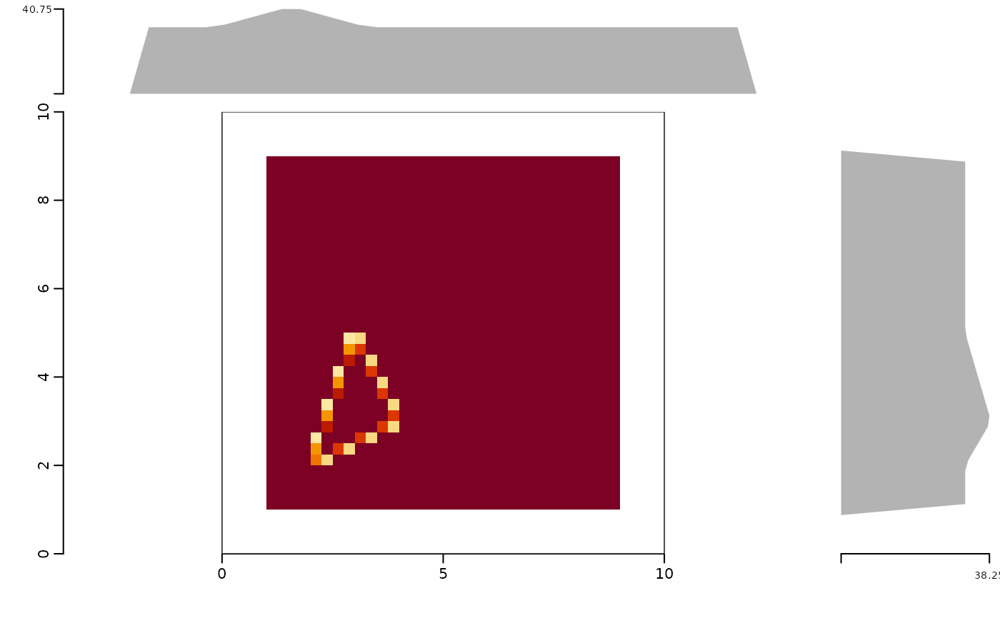
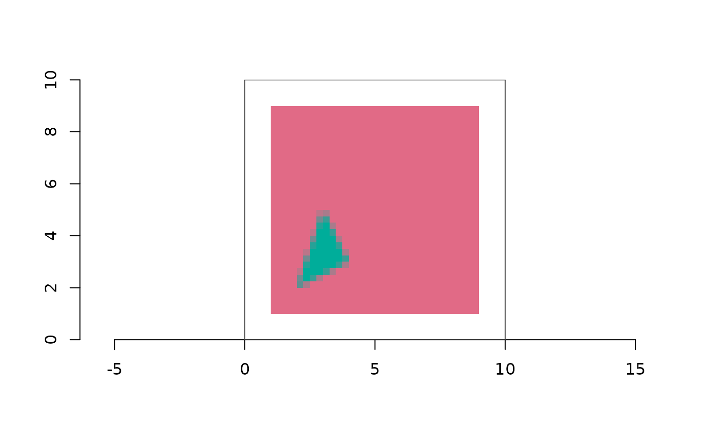
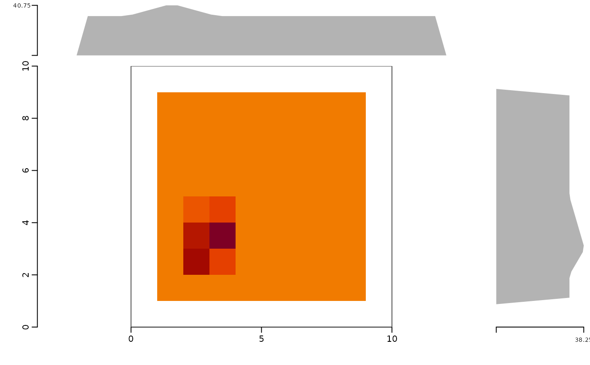

Draw a burn() result in map coordinates (asp = 1) with the grid
extent as the frame. Two renderings are available:
# S3 method for class 'controlledburn'
plot(
x,
what = c("auto", "exact", "overview"),
marginals = TRUE,
col = grDevices::hcl.colors(64, "YlOrRd", rev = TRUE),
by_id = FALSE,
tiles = 256L,
threshold = 50000,
content = FALSE,
main = NULL,
...
)A controlledburn object returned by burn().
"auto", "exact", or "overview".
Draw the row and column marginal strips. The layout is sized from the extent's aspect ratio so the strips span exactly the map; leftover device space is left blank.
Colour ramp (low to high coverage) for "overview" and for
edge shading in "exact".
In "exact" mode, colour cells by geometry id instead of
by coverage (edge cells take their fraction as opacity).
Passed to overview_burn() for the "overview" rendering.
Record count above which "auto" switches to
"overview".
Draw the content extent (bounding box of touched cells) as a dashed rectangle.
Optional title, drawn in the outer margin above the strips.
Passed to graphics::plot() for the main panel.
x, invisibly, with the summary computed for the marginals
attached as attribute summary.
"exact"every record is drawn: runs as rectangles, edge cells shaded by coverage fraction, line cells shaded by length (relative to the cell diagonal), points as cells. Cost is one rectangle per record, so this is the picture of the sparse representation itself.
"overview"the coarse mean-coverage matrix from
overview_burn() drawn with ximage::ximage(). Cost does not
depend on grid size.
"auto" (default) picks "exact" when the total record count is at
most threshold, else "overview". Either way the optional marginal
strips are exact: covered cells per grid row (right) and per grid
column (top), from summary.controlledburn().
if (requireNamespace("geos", quietly = TRUE)) {
poly <- geos::as_geos_geometry(c("POLYGON ((1 1, 9 1, 9 9, 1 9, 1 1))",
"POLYGON ((2 2, 4 3, 3 5, 2 2))"))
r <- burn(poly, extent = c(0, 10, 0, 10), dimension = c(40L, 40L))
plot(r)
plot(r, by_id = TRUE, marginals = FALSE)
plot(r, what = "overview", tiles = 10)
}


